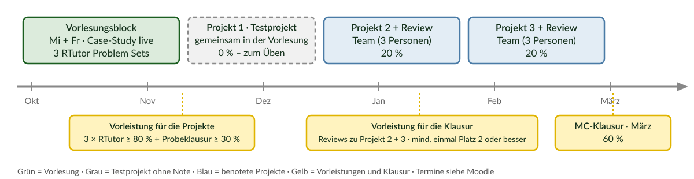
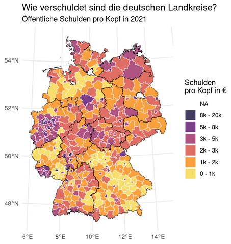
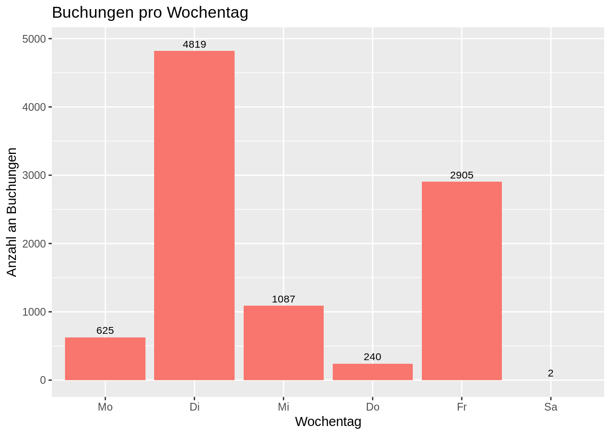
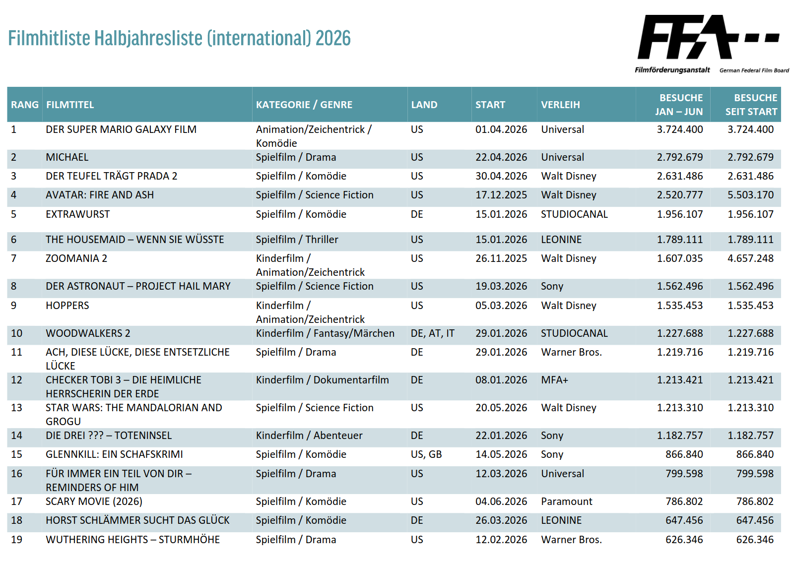
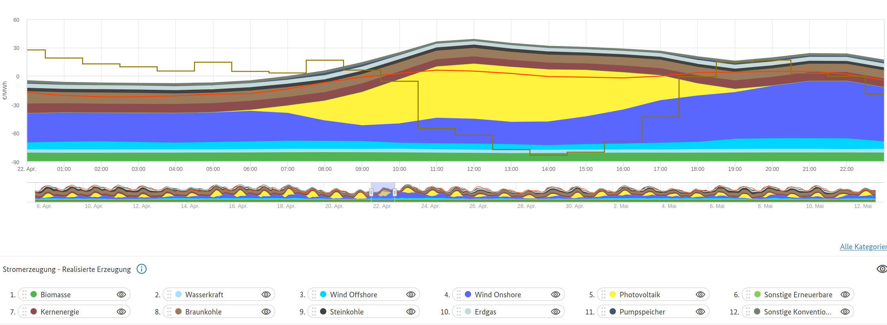
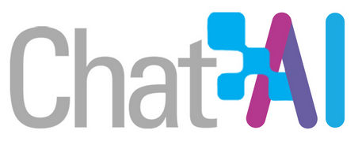
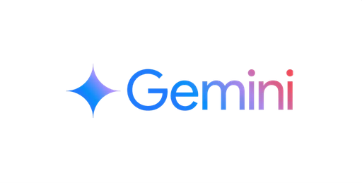

Willkommen!
Universität Ulm · Studienkommission Wirtschaftswissenschaften
14. Oktober 2026
Drei Fragen und bitte antworten Sie ehrlich:
Typisches Bild: 1 → ein Drittel, 2 → fast niemand, 3 → fast alle. Dieser Kurs holt Sie bei 3 ab und bringt Sie zu 1 und 2. Mein Ziel ist es, dass Sie beurteilen können, ob der Code, den die KI Ihnen schreibt, stimmt.
Dieses Semester
Sommersemester 2027
Keine dieser Fähigkeiten lernt man durch Zuschauen. Deshalb ist dieser Kurs ein Projektkurs: Sie bauen drei Analysen auf echten Daten – das erste Projekt machen Sie gemeinsam mit mir in der Vorlesung.
Dozent
Dr. Alexander Rieber 📧 alexander.rieber@uni-ulm.de 🏢 Helmholtzstraße 18, Raum 1.22
Übungsleiter
Dr. Dennis Steinle 📧 dennis.steinle@uni-ulm.de 🏢 Helmholtzstraße 18, Raum 1.10
Tutor:innen – Ihre erste Anlaufstelle in der Projektphase
Wer antwortet worauf? Forum → Tutor:innen und Übungsleiter, meist innerhalb eines Tages. Noten und Persönliches → E-Mail an den Dozenten.

Die Lehrvideos erklären die Werkzeuge. Die Vorlesung ist für das, was nur live funktioniert:
Was in der Vorlesung passiert
Was Sie zu Hause machen
Die Case-Study, die wir in der Vorlesung bauen, ist die Vorlage für Ihre Projekte. Wer sie live mitgemacht hat, hat im Projekt den Code schon einmal gesehen.
Wir versprechen
Wir erwarten
Bis zum 13. November finden Vorlesungen als Präsenzveranstaltung in H3 statt:
Begleitend: Lehrvideos, Tutorials und RTutor Problem Sets.
Am Freitag, 13. November erarbeiten wir Projekt 1 gemeinsam in der Vorlesung – ein Testprojekt ohne Note. Danach folgen zwei eigenständige Teamprojekte (je 20 % der Endnote).
Geblockte Vorlesungseinheiten zu Semesterbeginn: Erst das lernen Sie die Theorie, dann setzen Sie diese in konkreten projekten um. In der Projektphase gibt es keine regulären Vorlesungen, dafür wöchentliche Tutorien.
Moodle
GitHub
Einmal klonen, danach jede Woche Pull und alles ist aktuell.
Bearbeitung lokal oder in der Posit Cloud.
RTutor sagt Ihnen sofort, ob eine Lösung stimmt. Nutzen Sie das: Erst selbst versuchen, dann Hinweis, dann Lösung. BItte nicht umgekehrt.
🔮 Schätzfrage: Welcher Landkreis in Baden-Württemberg hat die höchsten kommunalen Schulden pro Kopf. Liegt Ulm darüber oder darunter?
In der Case-Study bauen wir gemeinsam die Antwort auf:
Gibt es einen Zusammenhang zwischen der Verschuldung eines Landkreises und dessen Arbeitslosenquote?
Daten: Statistisches Bundesamt, Bundesagentur für Arbeit, Statistische Ämter der Länder – auf Landkreisebene.

🔮 Schätzfrage: An welchem Wochentag werden in einem Unternehmen die meisten Buchungen erfasst?
Wie kann ein:e Wirtschaftsprüfer:in mögliche Bilanzmanipulationen aufspüren?
Daten: Journalbuchungen eines Unternehmens. Wir erarbeiten dieses Projekt gemeinsam in der Vorlesung als Testprojekt.

🔮 Schätzfrage: Wie viele der 100 meistbesuchten Kinofilme eines Jahres tauchen später bei Netflix auf – 1 von 10, 1 von 3 oder 2 von 3?
Verdrängt Streaming das Kino, oder bedienen beide Märkte unterschiedliche Bedürfnisse? Und ist die staatliche Filmförderung samt Kinofenster noch gerechtfertigt?
Daten: Filmförderungsanstalt (monatliche Top 100, Bundesländer), Netflix Engagement Reports (Sehstunden je Titel), Eurostat (Streaming-Nutzung in Europa).

🔮 Schätzfrage: In wie vielen Stunden des Jahres 2024 war der Strompreis an der Börse negativ – 45, 457 oder 4.570?
Warum hat Deutschland gleichzeitig Rekordanteile erneuerbarer Energien, negative Strompreise und die höchsten Haushaltsstrompreise Europas und wer trägt die Kosten der Energiewende?
Daten: SMARD der Bundesnetzagentur (stündliche Erzeugung und Börsenpreise), Marktstammdatenregister (jede PV- und Windanlage mit Standort), Eurostat (Strompreise und EE-Anteile in Europa).

Nach Projekt 2 und 3 bekommen Sie die Ausarbeitung eines anderen Teams zur Einschätzung.
Warum machen wir das?
Review Reports sind individuelle Abgaben und die Vorleistung für die Klausur: Das Team, das Ihren Report erhält, rankt alle Reports nach Nützlichkeit. Mindestens einer Ihrer beiden Reports muss auf Platz 2 oder besser landen.
| Leistung | Anteil an der Endnote | Wer |
|---|---|---|
| Projekt 1 – Testprojekt, gemeinsam in der Vorlesung | 0 % (zum Üben) | Team |
| Projekt 2 – Bericht 70 % + Screencast 30 % | 20 % | Team |
| Projekt 3 – Bericht 70 % + Screencast 30 % | 20 % | Team |
| Multiple-Choice-Abschlussprüfung | 60 % | individuell |
60 % Klausur heißt nicht, dass die Projekte unwichtig sind: Die Klausur fragt genau das ab, was Sie in den Projekten gemacht haben. Wer das Testprojekt und die zwei Teamprojekte wirklich selbst erarbeitet hat, lernt für die Klausur nebenbei.
Teams von drei Personen, Projekte werden gemeinsam abgegeben. Diskutieren über Teams hinweg ist erlaubt und erwünscht, Code und Texte weitergeben jedoch nicht.
| Was | Bedingung | Wann | Zulassung zu | |
|---|---|---|---|---|
| 1 | Drei RTutor Problem Sets, individuell | ≥ 80 % der Punkte pro Set | letztes Set 2. November | Projekte |
| 2 | Probeklausur (Multiple Choice, keine Hilfsmittel) | ≥ 30 % der Punkte | 20. November | Projekte |
| 3 | Review Reports zu Projekt 2 und 3, individuell | bei mindestens einem Projekt auf Platz 2 oder besser gerankt | nach Projekt 2 bzw. 3 | Klausur |
Die Probeklausur ist bewusst früh und niedrigschwellig: Sie sollen ein Gefühl für die Fragen bekommen, bevor 60 % der Note daran hängen. 30 % der Punkte erreicht, wer die RTutor-Sets selbst gelöst hat.
Bei den Review Reports zählt nicht die Abgabe, sondern die Nützlichkeit: Das bewertete Team rankt die erhaltenen Reports. Wer zweimal einen sorgfältigen Report schreibt, ist auf der sicheren Seite. Werden alle Reports als gleich nützlich eingestuft, entscheidet der Dozent über die Zulassung.
Die Abschlussprüfung fragt alles ab: die drei Projekte, die Vorlesung, die Case-Study und die RTutor Problem Sets.
Frühzeitig vorbereiten. Jedes Jahr verschenken Teams hier Punkte, weil der Screencast am letzten Abend entsteht.
Ihr erster R-Code heute war ein Balkendiagramm mit einem Satz als Titel. Ein guter Screencast ist genau das: eine Grafik, ein Satz, dann die nächste.
Die KI ersetzt nicht das Denken. Sie sind verantwortlich für alles, was Sie einreichen, auch wenn die KI eine falsche Analyse produziert oder Dinge falsch interpretiert.

Datenschutzkonformer Zugang über die GWDG, kostenlos mit Ihrem Uni-Account.
Darum geht es im Kurs: LLMs in den Lernprozess integrieren, in Vorlesung und Projekten einsetzen, und ihre Grenzen im akademischen Kontext kennen (Ethik, Recht, Zitation).

Gemini Pro über einen Studierendenaccount ist ein Jahr kostenlos.
Egal welches Modell: Geben Sie ihm Kontext (welche Vorlesung, welche Daten, glimpse()-Output) und verlangen Sie zu jedem Code einen Check: “Wie prüfe ich, dass das stimmt?”
Wenn Sie die Antwort auf eine Forumsfrage wissen: posten Sie sie. Erklären ist die beste Art zu lernen.
Das Tutorium ist vor allem dafür da, Sie bei Ihren Projekten zu unterstützen, d.h. bringen Sie konkrete Probleme mit.
| Wann | |
|---|---|
| Erstes Tutorium (technische Probleme: Installation, GitHub, Posit Cloud) | Donnerstag, 15.10., 14–18 Uhr (online) |
| Erste Vorlesung | Freitag, 16.10., 10:15 Uhr, H3 |
Was gut funktioniert
Woran Teams jedes Jahr scheitern
Code aus dem Web ist erlaubt, aber mit Quellenangabe. Gleiches gilt für die Nutzung von LLMs. RTutor-Code wird nicht geteilt. Projekt-Code bleibt im Team.
Auf Basis des Feedbacks früherer Kohorten haben wir den Kurs mehrfach umgebaut: Kahoot, Bug Hunts, Code-Felder, Einbau von LLMs, Umgestaltung der Projekte etc. sind das Ergebnis. Damit wir wissen, was wirkt, wollen wir eine wissenschaftliche Begleitstudie durchführen.
Bitte lesen Sie die Einverständnis- und Datenschutzerklärung und geben Sie im Moodle-Formular an, ob wir Ihre Daten verwenden dürfen. Wir würden uns sehr freuen, wenn Sie uns unterstützen.
Für jeden Punkt gibt es ein Lehrvideo auf Moodle.
1. R und RStudio installieren
version und RStudio.Version() zeigen den Stand; installr::updateR() aktualisiertinstall.packages(c("tidyverse", "RTutor")), danach update.packages()2. GitHub-Account → nächste Folie
3. Posit Cloud: auf posit.cloud mit dem GitHub-Account einloggen
4. In Moodle eintragen
5. KI-Zugang anlegen → übernächste Folie
6. Erstes Tutorium am Donnerstag, 15.10., 14–18 Uhr (online): alles, was bei 1–5 hakt, wird dort gelöst
github.com → Account erstellen (falls noch keiner vorhanden). Ihre Projekte laufen später komplett über GitHub.
Tipps zum Nutzernamen1
Account bei GWDG Chat AI und/oder Google Gemini anlegen. Dann:
Am Freitag sammeln wir: Wie viele von 10 Antworten hatten einen Fehler? Was war die überzeugendste falsche Antwort?
Das ist der Kern von AI Literacy: Sie wissen nur dann, ob die KI Recht hat, wenn Sie das Thema kennen. In R schaffen wir dieses Wissen in den nächsten Wochen.
Mitbringen am Freitag, 16.10., 10:15 Uhr:
Erste Vorlesung: Wir klonen das Repository und bauen den ersten Teil der Case-Study mit dem ersten Bug Hunt.
Kontakt
Dr. Alexander Rieber alexander.rieber@uni-ulm.de
Projektkurs Data Science · Einführung